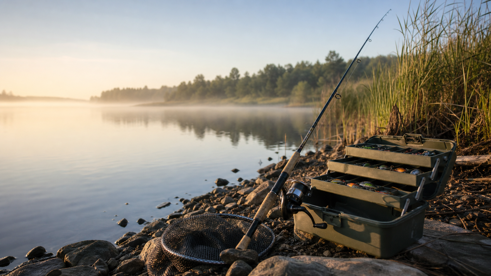

Single page
Fotografia
Przykładowa strona usługowa dla sesji portretowych, reportażu i zdjęć produktowych.
Otwórz stronęGitHub Pages demo
Ten katalog zawiera statyczną stronę główną oraz dwa przykładowe single page: o fotografii i wędkarstwie.
Single page
Przykładowa strona usługowa dla sesji portretowych, reportażu i zdjęć produktowych.
Otwórz stronę
Single page
Przykładowa strona dla przewodnika wędkarskiego, wypraw i spokojnych poranków nad wodą.
Otwórz stronę